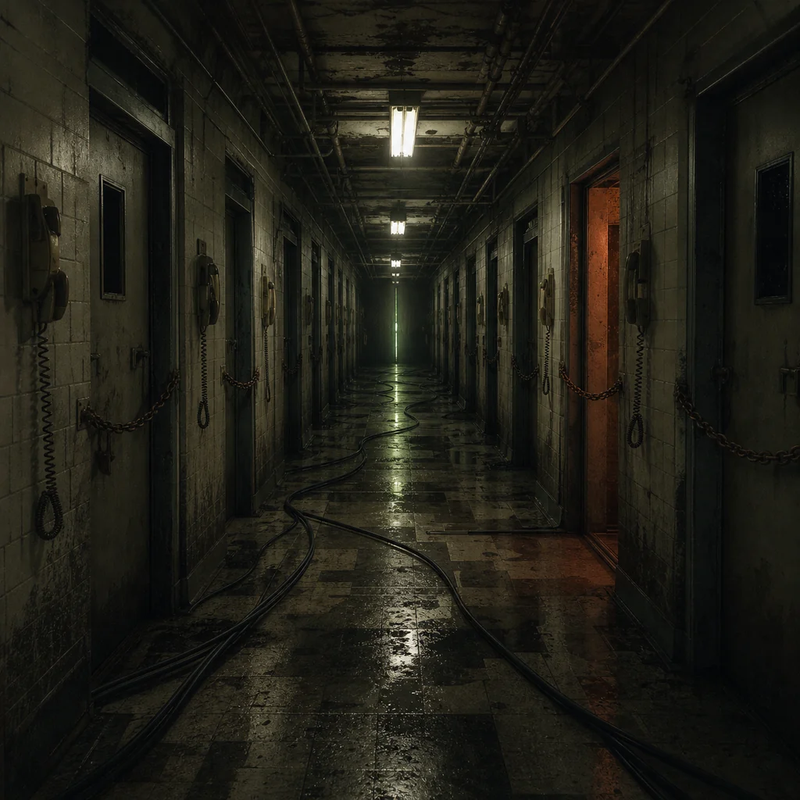

The stairs do not end in a basement. They end in a fluorescent corridor with sealed doors and laminated policies. Every sign has been redacted except the parts that say OBSERVATION, COMPLIANCE, and SAFETY.
A nurse station sits behind glass. No one is there. The phones ring anyway. When you pick one up, a recording says: "for this to work you need to stay alive." Then it plays the dial tone backward.
This room is not a hospital. It is the Backrooms trying to understand the idea of a hospital from corrupted forum posts, witness fragments, and fear. It gets the lighting right. It gets the tenderness wrong.
log the difference between care and control